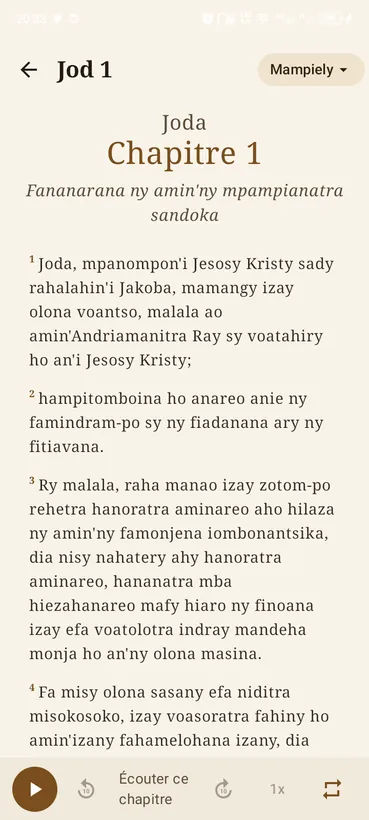
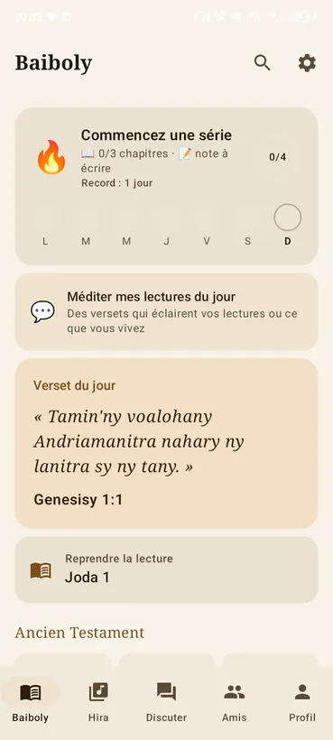
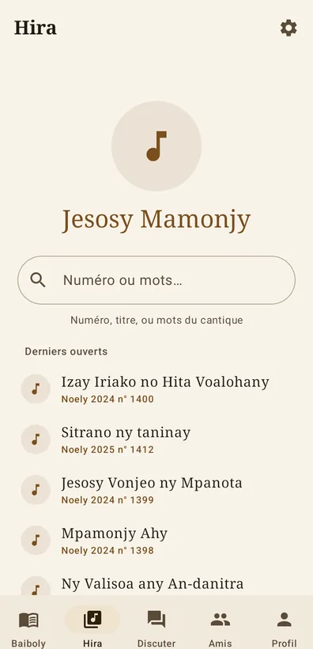
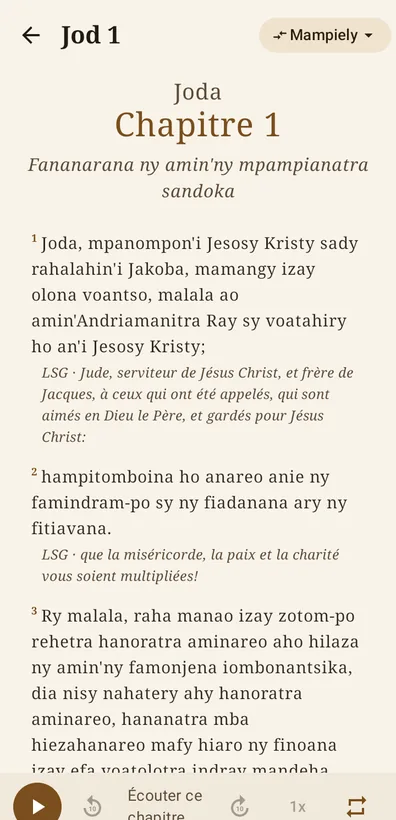
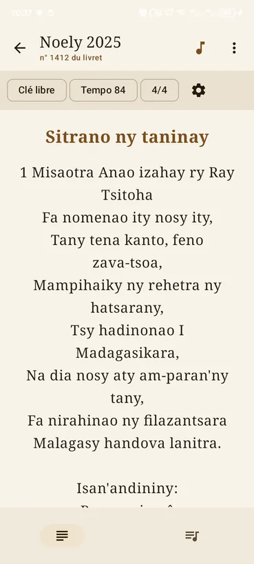
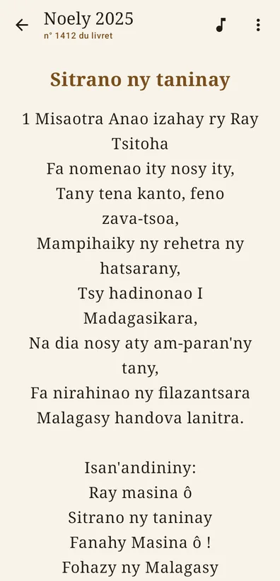
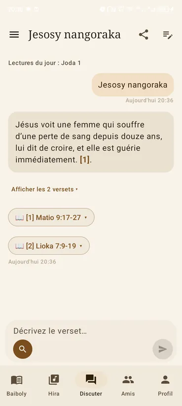
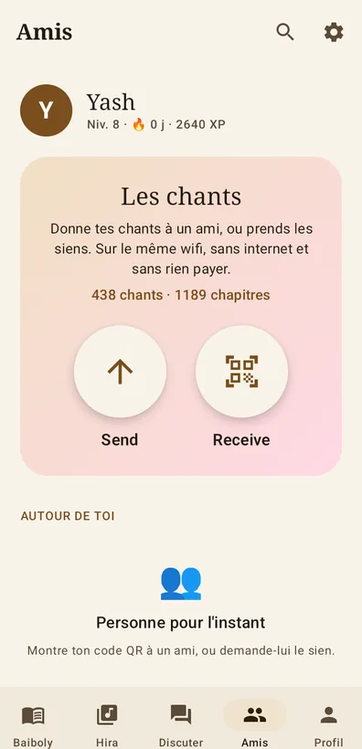
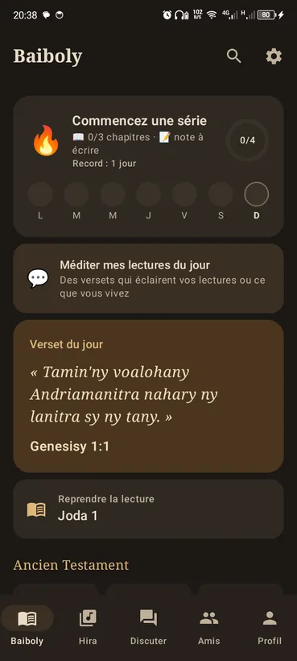

La Baiboly en quatre versions, le Fihirana au complet et l'enseignement, réunis dans une seule application. Rien à payer, aucune publicité, et pas besoin d'internet pour lire.
« 'Lay faniloko ho an'ny tongotro ny teninao,
sady fanazavana ho amin'ny lalako. » — Salamo 119:105



Un verset qu'on ne retrouve plus, un cantique annoncé à l'instant, un accord à transposer : l'application répond sans faire attendre.
Lisez-en une, ou deux côte à côte pour comparer une traduction à l'autre, verset par verset.
Par la référence quand on la connaît, par les quelques mots dont on se souvient quand elle nous échappe.
Jesosy Mamonjy, FFPM, Tononkira et les recueils de Noël — et vos propres mp3 ajoutés cantique par cantique.
Grille d'accords, transposition en un geste, métronome et accompagnement au piano.
Passez vos enregistrements d'un téléphone à l'autre par le wifi, sans forfait et sans serveur.
Versets enregistrés, notes, plan de lecture et la série de jours qui donne envie de continuer.
Un mot qui surprend dans la traduction malgache, une tournure plus claire ailleurs : la seconde version se glisse sous chaque verset, en plus petit. La comparaison se fait d'un regard, sans quitter le chapitre.

Écrivez la suite d'accords une fois, transposez-la pour la voix du jour, et laissez le piano donner le ton pendant la répétition. Les accords de passage tiennent dans la mesure, les m7 et les diminués s'écrivent comme on les note sur le papier.

Un cantique enregistré au culte, une répétition captée au téléphone : attachez le fichier au cantique et il se lance avec les paroles, à côté du titre. Choisissez-le là où il se trouve — l'application le range et le renomme elle-même, puis propose d'effacer l'original pour ne pas garder deux fois le même morceau.

En clair comme en sombre, selon le réglage du téléphone.



L'application ne vient pas encore du Play Store : Android demandera une autorisation, une seule fois.
À savoir. Quand l'application arrivera sur le Play Store, il faudra désinstaller celle-ci d'abord : les deux ne portent pas la même signature. Vos cantiques et vos enregistrements restent sur le téléphone, mais vos notes et votre progression seront effacées — c'est une version d'essai.
L'application prévient d'elle-même quand une version plus récente paraît.
Télécharger pour Android